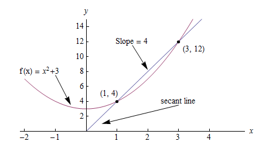

Calculus
Contents
Calculus#
Introduction#
You need to know some basic calculus in order to understand how functions change over time (derivatives), and to calculate the total amount of a quantity that accumulates over a time period (integrals). The language of calculus will allow you to speak precisely about the properties of functions and better understand their behaviour.
Normally taking a calculus course involves doing lots of tedious calculations by hand, but having the power of computers on your side can make the process much more fun. This section describes the key ideas of calculus which you’ll need to know to understand machine learning concepts.
Derivatives#
A derivative can be defined in two ways:
Instantaneous rate of change (Physics)
Slope of a line at a specific point (Geometry)
Both represent the same principle, but for our purposes it’s easier to explain using the geometric definition.
Geometric definition#
In geometry slope represents the steepness of a line. It answers the question: how much does \(y\) or \(f(x)\) change given a specific change in \(x\)?

Using this definition we can easily calculate the slope between two points. But what if I asked you, instead of the slope between two points, what is the slope at a single point on the line? In this case there isn’t any obvious “rise-over-run” to calculate. Derivatives help us answer this question.
A derivative outputs an expression we can use to calculate the instantaneous rate of change, or slope, at a single point on a line. After solving for the derivative you can use it to calculate the slope at every other point on the line.
Taking the derivative#
Consider the graph below, where \(f(x) = x^2 + 3\).
The slope between (1,4) and (3,12) would be:
But how do we calculate the slope at point (1,4) to reveal the change in slope at that specific point?
One way would be to find the two nearest points, calculate their slopes relative to \(x\) and take the average. But calculus provides an easier, more precise way: compute the derivative. Computing the derivative of a function is essentially the same as our original proposal, but instead of finding the two closest points, we make up an imaginary point an infinitesimally small distance away from \(x\) and compute the slope between \(x\) and the new point.
In this way, derivatives help us answer the question: how does \(f(x)\) change if we make a very very tiny increase to x? In other words, derivatives help estimate the slope between two points that are an infinitesimally small distance away from each other. A very, very, very small distance, but large enough to calculate the slope.
In math language we represent this infinitesimally small increase using a limit. A limit is defined as the output value a function approaches as the input value approaches another value. In our case the target value is the specific point at which we want to calculate slope.
Step-by-step#
Calculating the derivative is the same as calculating normal slope, however in this case we calculate the slope between our point and a point infinitesimally close to it. We use the variable \(h\) to represent this infinitesimally distance. Here are the steps:
Given the function:
Increment \(x\) by a very small value \(h (h = Δx)\)
Apply the slope formula
Simplify the equation
Set \(h\) to 0 (the limit as \(h\) heads toward 0)
So what does this mean? It means for the function \(f(x) = x^2\), the slope at any point equals \(2x\). The formula is defined as:
Code
Let’s write code to calculate the derivative of any function \(f(x)\). We test our function works as expected on the input \(f(x)=x^2\) producing a value close to the actual derivative \(2x\).
1 def get_derivative(func, x):
2 """Compute the derivative of `func` at the location `x`."""
3 h = 0.0001 # step size
4 return (func(x+h) - func(x)) / h # rise-over-run
5
6 def f(x): return x**2 # some test function f(x)=x^2
7 x = 3 # the location of interest
8 computed = get_derivative(f, x)
9 actual = 2*x
10
11 computed, actual # = 6.0001, 6 # pretty close if you ask me...
In general it’s preferable to use the math to obtain exact derivative formulas, but keep in mind you can always compute derivatives numerically by computing the rise-over-run for a “small step” \(h\).
Machine learning use cases#
Machine learning uses derivatives in optimization problems. Optimization algorithms like gradient descent use derivatives to decide whether to increase or decrease weights in order to maximize or minimize some objective (e.g. a model’s accuracy or error functions). Derivatives also help us approximate nonlinear functions as linear functions (tangent lines), which have constant slopes. With a constant slope we can decide whether to move up or down the slope (increase or decrease our weights) to get closer to the target value (class label).
Chain rule#
The chain rule is a formula for calculating the derivatives of composite functions. Composite functions are functions composed of functions inside other function(s).
How It Works#
Given a composite function \(f(x) = A(B(x))\), the derivative of \(f(x)\) equals the product of the derivative of \(A\) with respect to \(B(x)\) and the derivative of \(B\) with respect to \(x\).
For example, given a composite function \(f(x)\), where:
The chain rule tells us that the derivative of \(f(x)\) equals:
Step-by-step#
Say \(f(x)\) is composed of two functions \(h(x) = x^3\) and \(g(x) = x^2\). And that:
The derivative of \(f(x)\) would equal:
Steps
Solve for the inner derivative of \(g(x) = x^2\)
Solve for the outer derivative of \(h(x) = x^3\), using a placeholder \(b\) to represent the inner function \(x^2\)
Swap out the placeholder variable (b) for the inner function (g(x))
Return the product of the two derivatives
Multiple functions#
In the above example we assumed a composite function containing a single inner function. But the chain rule can also be applied to higher-order functions like:
The chain rule tells us that the derivative of this function equals:
We can also write this derivative equation \(f'\) notation:
Steps
Given the function \(f(x) = A(B(C(x)))\), lets assume:
The derivatives of these functions would be:
We can calculate the derivative of \(f(x)\) using the following formula:
We then input the derivatives and simplify the expression:
Gradients#
A gradient is a vector that stores the partial derivatives of multivariable functions. It helps us calculate the slope at a specific point on a curve for functions with multiple independent variables. In order to calculate this more complex slope, we need to isolate each variable to determine how it impacts the output on its own. To do this we iterate through each of the variables and calculate the derivative of the function after holding all other variables constant. Each iteration produces a partial derivative which we store in the gradient.
Partial derivatives#
In functions with 2 or more variables, the partial derivative is the derivative of one variable with respect to the others. If we change \(x\), but hold all other variables constant, how does \(f(x,z)\) change? That’s one partial derivative. The next variable is \(z\). If we change \(z\) but hold \(x\) constant, how does \(f(x,z)\) change? We store partial derivatives in a gradient, which represents the full derivative of the multivariable function.
Step-by-step#
Here are the steps to calculate the gradient for a multivariable function:
Given a multivariable function
Calculate the derivative with respect to \(x\)
Swap \(2z^3\) with a constant value \(b\)
Calculate the derivative with \(b\) constant
As \(h —> 0\)…
2bx + 0
Swap \(2z^3\) back into the equation, to find the derivative with respect to \(x\).
Repeat the above steps to calculate the derivative with respect to \(z\)
Store the partial derivatives in a gradient
Directional derivatives#
Another important concept is directional derivatives. When calculating the partial derivatives of multivariable functions we use our old technique of analyzing the impact of infinitesimally small increases to each of our independent variables. By increasing each variable we alter the function output in the direction of the slope.
But what if we want to change directions? For example, imagine we’re traveling north through mountainous terrain on a 3-dimensional plane. The gradient we calculated above tells us we’re traveling north at our current location. But what if we wanted to travel southwest? How can we determine the steepness of the hills in the southwest direction? Directional derivatives help us find the slope if we move in a direction different from the one specified by the gradient.
Math
The directional derivative is computed by taking the dot product 11 of the gradient of \(f\) and a unit vector \(\vec{v}\) of “tiny nudges” representing the direction. The unit vector describes the proportions we want to move in each direction. The output of this calculation is a scalar number representing how much \(f\) will change if the current input moves with vector \(\vec{v}\).
Let’s say you have the function \(f(x,y,z)\) and you want to compute its directional derivative along the following vector 2:
As described above, we take the dot product of the gradient and the directional vector:
We can rewrite the dot product as:
This should make sense because a tiny nudge along \(\vec{v}\) can be broken down into two tiny nudges in the x-direction, three tiny nudges in the y-direction, and a tiny nudge backwards, by −1 in the z-direction.
Useful properties#
There are two additional properties of gradients that are especially useful in deep learning. The gradient of a function:
Always points in the direction of greatest increase of a function (explained here)
Is zero at a local maximum or local minimum
Integrals#
The integral of \(f(x)\) corresponds to the computation of the area under the graph of \(f(x)\). The area under \(f(x)\) between the points \(x=a\) and \(x=b\) is denoted as follows:
The area \(A(a,b)\) is bounded by the function \(f(x)\) from above, by the \(x\)-axis from below, and by two vertical lines at \(x=a\) and \(x=b\). The points \(x=a\) and \(x=b\) are called the limits of integration. The \(\int\) sign comes from the Latin word summa. The integral is the “sum” of the values of \(f(x)\) between the two limits of integration.
The integral function \(F(c)\) corresponds to the area calculation as a function of the upper limit of integration:
There are two variables and one constant in this formula. The input variable \(c\) describes the upper limit of integration. The integration variable \(x\) performs a sweep from \(x=0\) until \(x=c\). The constant \(0\) describes the lower limit of integration. Note that choosing \(x=0\) for the starting point of the integral function was an arbitrary choice.
The integral function \(F(c)\) contains the “precomputed” information about the area under the graph of \(f(x)\). The derivative function \(f'(x)\) tells us the “slope of the graph” property of the function \(f(x)\) for all values of \(x\). Similarly, the integral function \(F(c)\) tells us the “area under the graph” property of the function \(f(x)\) for all possible limits of integration.
The area under \(f(x)\) between \(x=a\) and \(x=b\) is obtained by calculating the change in the integral function as follows:
Computing integrals#
We can approximate the total area under the function \(f(x)\) between \(x=a\) and \(x=b\) by splitting the region into tiny vertical strips of width \(h\), then adding up the areas of the rectangular strips. The figure below shows how to compute the area under \(f(x)=x^2\) between \(x=1\) and \(x=3\) by approximating it as four rectangular strips of width \(h=0.5\).

Usually we want to choose \(h\) to be a small number so that the approximation is accurate. Here is some sample code that performs integration.
1 def get_integral(func, a, b):
2 """Compute the area under `func` between x=a and x=b."""
3 h = 0.0001 # width of small rectangle
4 x = a # start at x=a
5 total = 0
6 while x <= b: # continue until x=b
7 total += h*func(x) # area of rect is base*height
8 x += h
9 return total
10
11 def f(x): return x**2 # some test function f(x)=x^2
12 computed = get_integral(f, 1, 3)
13 def actualF(x): return 1.0/3.0*x**3
14 actual = actualF(3) - actualF(1)
15 computed, actual # = 8.6662, 8.6666 # pretty close if you ask me...
You can find integral functions using the derivative formulas and some reverse engineering. To find an integral function of the function \(f(x)\), we must find a function \(F(x)\) such that \(F'(x)=f(x)\). Suppose you’re given a function \(f(x)\) and asked to find its integral function \(F(x)\):
This problem is equivalent to finding a function \(F(x)\) whose derivative is \(f(x)\):
For example, suppose you want to find the indefinite integral \(\int \!x^2\:dx\). We can rephrase this problem as the search for some function \(F(x)\) such that
Remembering the derivative formulas we saw above, you guess that \(F(x)\) must contain an \(x^3\) term. Taking the derivative of a cubic term results in a quadratic term. Therefore, the function you are looking for has the form \(F(x)=cx^3\), for some constant \(c\). Pick the constant \(c\) that makes this equation true:
Solving \(3c=1\), we find \(c=\frac{1}{3}\) and so the integral function is
You can verify that \(\frac{d}{dx}\left[\frac{1}{3}x^3 + C\right] = x^2\).
You can also verify Integrals using maths. Here is a set of formulas for your reference
Applications of integration#
Integral calculations have widespread applications to more areas of science than are practical to list here. Let’s explore a few examples related to probabilities.
Computing probabilities#
A continuous random variable \(X\) is described by its probability density function \(p(x)\). A probability density function \(p(x)\) is a positive function for which the total area under the curve is \(1\):
The probability of observing a value of \(X\) between \(a\) and \(b\) is given by the integral
Thus, the notion of integration is central to probability theory with continuous random variables.
We also use integration to compute certain characteristic properties of the random variable. The expected value and the variance are two properties of any random variable \(X\) that capture important aspects of its behaviour.
Expected value#
The expected value of the random variable \(X\) is computed using the formula
The expected value is a single number that tells us what value of \(X\) we can expect to obtain on average from the random variable \(X\). The expected value is also called the average or the mean of the random variable \(X\).
Variance#
The variance of the random variable \(X\) is defined as follows:
The variance formula computes the expectation of the squared distance of the random variable \(X\) from its expected value. The variance \(\sigma^2\), also denoted \(\textrm{var}(X)\), gives us an indication of how clustered or spread the values of \(X\) are. A small variance indicates the outcomes of \(X\) are tightly clustered near the expected value \(\mu\), while a large variance indicates the outcomes of \(X\) are widely spread. The square root of the variance is called the standard deviation and is usually denoted \(\sigma\).
The expected value \(\mu\) and the variance \(\sigma^2\) are two central concepts in probability theory and statistics because they allow us to characterize any random variable. The expected value is a measure of the central tendency of the random variable, while the variance \(\sigma^2\) measures its dispersion. Readers familiar with concepts from physics can think of the expected value as the centre of mass of the distribution, and the variance as the moment of inertia of the distribution.
References